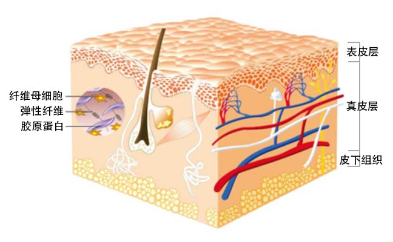
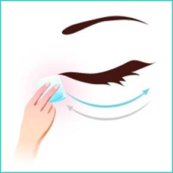
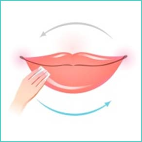
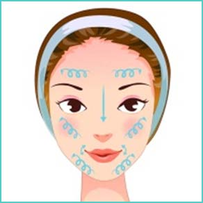
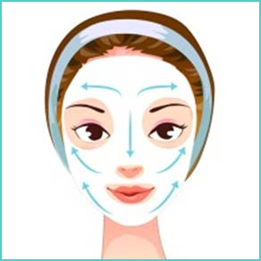
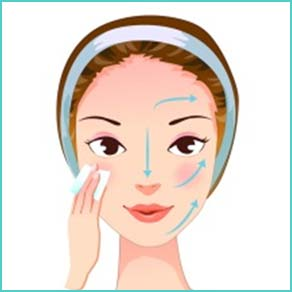
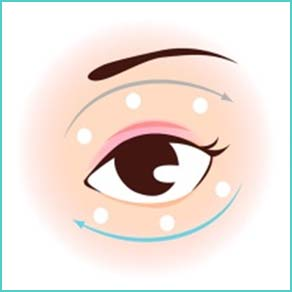
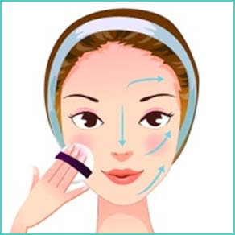

与皮肤外在状态息息相关的是表皮层和真皮层哦。表皮是皮肤的最外层，能不断新生，与痘痘、暗沉、色斑有直接关系。真皮层主要由胶原蛋白及弹性纤维所构成，是与肌肤老化有直接关系的重要部位。

然而，无论在任何年龄段、无论油性肌肤还是干性肌肤、无论长痘痘还是敏感……总之，在任何情况下都需要做好充足的基础护肤工作：洁面、调理肌肤、爽肤、均衡滋润、保护，五步缺一不可哦。
1.第一步:清洁
1) 清洁的作用:皮肤清洁是保养最重要的基础，它包含卸妆和日常的洁面，通常先卸妆后洁面。每天早、晚各一次的清洁工作，可以温和并彻底地卸除你脸上的化妆品及过量的油脂和污垢。
2) 卸妆是清洁之前重要的一步，特别在使用了粉底、隔离、彩妆、防水型防晒之后更需要卸妆。卸除脸部的残妆时，要注意眼部和唇部的皮肤最娇嫩，手法力度要轻柔哦。
A 眼部卸妆


眼部肌肤和眼球都非常娇嫩，而同时眼部彩妆都比较防水。所以要专门用眼部卸妆液，可以温和同时又彻底的卸除眼部彩妆，丝毫不刺激眼部。
用化妆棉蘸取清爽卸妆液约一个硬币的大小，在眼部轻按20秒溶解睫毛、眼线上的防水成分。用棉片按左图所示从上向下轻柔的卸除眼妆，每次经过睫毛根部时停留5秒钟。
将棉片一折四，用折角与眼睛垂直的方向来回擦拭睫毛根部眼线及眼皮皱褶中的彩妆残留物。最后将化妆棉翻折，用干净一面轻轻向外涂，清除眼影和眉毛。如需要，重复步骤。
B 唇部卸妆
将卸妆液倒在化妆棉上，在唇部轻敷按压10秒溶解唇部彩妆。将棉片对折，一手固定唇角，向外拉伸唇部肌肤，另一只手持棉片横向按图示
擦拭下唇，将棉片换干净面，换手固定另一边嘴角，横向擦拭上唇。如需要，重复步骤。
C 洁面的手法
用指腹顺着图示方向由下往上，由内往外打圈轻揉（不要用力搓洗），避开眼周。然后用清水（最好是温水）冲洗，配合湿润的玫琳凯美容纸巾擦洗拭净。
2.第二步:调理肌肤
Q：为什么要定期去除皮肤表面的堆积死皮？
A：角质层过厚会让肌肤失去通透感，变得粗糙晦暗，而且还会阻碍护肤品营养的吸收。肌肤的新陈代谢通常为28天一个周期，25岁过后，其代谢的速度会日趋缓慢，角质层的脱落也会减缓，因此就会渐渐堆积变厚。所以我们需要养成定期去除堆积死皮的护肤习惯，让肌肤恢复通透柔嫩，肤色明亮。
Q：面膜对肌肤的作用？
A：每星期的两次面膜，可帮助老废角质正常脱落，使皮肤纹理光滑，呈现清新、光采的容貌。玫琳凯的面膜和多数品牌不同，不仅有减法面膜如经典护肤系列面膜，可以温和的去除堆积在皮肤表面的死皮，促进营养吸收；还有加法面膜如美白润泽面膜可以为肌肤补充水分和营养哦。
Q：涂抹面膜及清洗面膜的手法有讲究吗？
A：涂抹面膜时，我们以向上、向外的手势将面膜平敷在洁净的脸部，避开眼圈周围和唇部。静待10分钟，不要说话，不要挤压皮肤。8-10分
钟后，先用水湿润面膜，用手轻轻打圈按摩，可以进一步去除堆积死皮。然后再用清水，配合湿润的玫琳凯美容纸巾把面膜擦拭洗净。如果是容易产生敏感现象的肌肤，面膜敷5分钟，清洗时不要按摩，配合湿润的玫琳凯美容纸巾擦试洗净。
3.第三步:爽肤
1) 爽肤水的作用:补水保湿，同时可以软化角质，再次清洁肌肤，促进后续润肤营养吸收。平衡PH值，增加肌肤的柔软感和湿润度。有的还可
以帮助收缩毛孔。
2) 爽肤水的用法:充分沾湿化妆棉，依图示方向，避开眼部，轻轻擦拭脸部及颈部。重复擦拭，T区可多擦拭，直到化妆棉没有污垢及残留化妆品的痕迹为止。
3) 用棉片擦拭爽肤水的好处:棉片擦拭，不仅可以加强二次清洁的效果，更有效的促进后续营养的吸收。而且，棉纤维能帮助带走多余的老废角质，使爽肤水涂抹均匀，用量好控制又节省。
4.第四步:均衡滋养
1) 均衡滋润的作用:均衡滋润是指使用乳液，或面霜的保养步骤，能给肌肤补充必需的水份和养份，充分滋润肌肤，平衡肤质，保持肌肤的柔润光滑。
2) 均衡滋润的用法:为达最佳效果，使用保养品时一定要用中指和无名指的指腹，轻轻地以朝上和朝外的方式涂抹。
3) 选择适合的乳液面霜:无论顾客有什么特殊需求，例如抗皱或者美白等，都要首先确保适合顾客肤质，能达到其所需保湿的效果，在这个基础上抗皱或美白等保养才能发挥作用。均衡滋润这一步，有时是用一款产品，有时，由于环境，年龄等因素，还需要用补充性保养品来配合。最理想的保湿效果，应该是在用手指背面轻触时，你时时能感觉到肌肤是滋润的。
4) 通常眼霜应用于面霜之前，涂抹眼周部位时要轻柔。
a） 无名指沾取少量眼霜，在眉骨处和眼睑下方点按均匀。
b） 无名指绕眼部打圈涂抹，至眼霜吸收（眼睑由外眼角朝内眼角的方向，眉骨下方由内眼角至外眼角）
5.第五步:保护
1) 保护的作用:使用粉底，避免灰尘和污染与皮肤的直接接触，保护皮肤，并给予皮肤光滑、匀称的光彩。
2) 使用手法:取适量，先用五点法点在额头，鼻子，两颊和下巴处。然后用中指无名指指腹或海绵，将粉底轻点，分散开，然后轻轻将粉底向外向下推开、推匀。请特别注意下巴、发际交接处，颜色要融合。
服务内容：彩妆 护肤 形象设计
美容顾问：玫小琳
联系电话：135-8866-9999